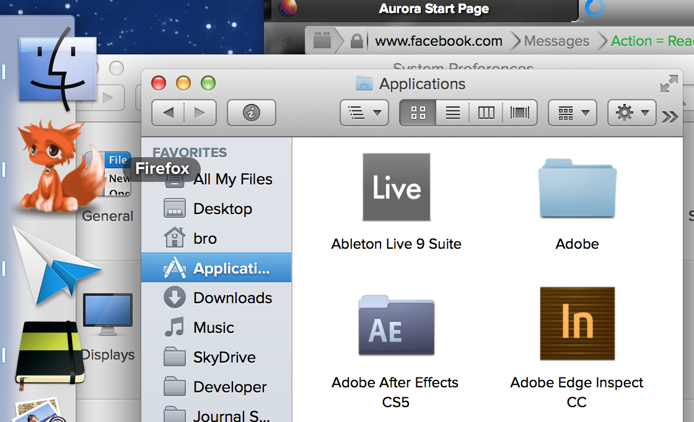

Info
----
OS X System Font Replacements
Tested on Lion, Mountain Lion, and Mavericks
Preview
----

Files
----
LucidaGrande 1.ttc - Original Lucida Grande (Backup)
LucidaGrande 1r.ttc - Retina Lucida Grande (Backup)
LucidaGrande 2.ttc - Proxima Nova
LucidaGrande 3.ttc - HP Prelude
LucidaGrande 4.ttc - Helvetica Neue
Instructions
----
1) Close all open applications
2) Rename the font your desired font to LucidaGrande.ttc
3) Replace the existing LucidaGrande.ttc in /Library/Fonts/
4) If prompted, enter your password
5) Immediately Log Out or Restart
6) Enjoy!